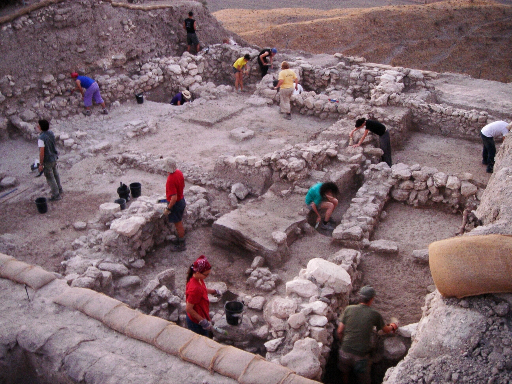

✨ Meet Dr. Sophie's Adventure! 🚁💜
How Dr. Sophie 👩🔬 uses drones 🚁 and smart robots 🤖 to find buried treasure faster (without walking SO much!)

🎓 Learn More About Archaeology
🏺

Learn more about dig sites →What Is Archaeology?
Archaeology is the study of people from the past by looking at things they left behind—called artifacts. Archaeologists learn about how people lived, what they ate, what tools they used, and how they built homes and cities.
🔍


What Are Artifacts?
Artifacts are objects made or used by humans. Examples include pottery pieces, coins, tools, jewelry, bones, and old building materials. Even broken artifacts can be just as valuable as whole ones!
👣
What Is Fieldwalking?
Fieldwalking is a method archaeologists use to find artifacts without digging. They walk across land in straight lines, look carefully at the ground, and record what they find and where they find it.
🧭
How Do We Record Finds?
Archaeologists use GPS coordinates, maps, photos, and notes to record discoveries. Recording exact locations is very important so that history is not lost!
🚁
Modern Technology
Today, archaeologists use drones, satellites, ground-penetrating radar, and AI to work faster and protect sites. Technology helps us discover more with less digging!
🧠
Fun Archaeology Facts!
- Archaeologists do NOT study dinosaurs!
- Broken artifacts are valuable too
- It's about careful thinking
- Kids can be archaeologists!
© 2025 The Wings of Discovery. Created by The Quantum Crystal. All rights reserved.